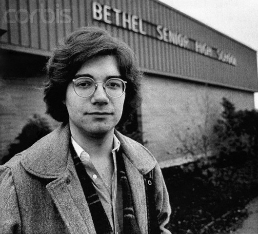

Background
In 1986, Matthew Fraser was a senior at Bethel High School in Pierce County, Washington. As a respected member of the Honor Society who intended to study law, Fraser was very involved in extracurricular activities at the school. On May 16th, Fraser was asked to give a speech nominating a fellow senior, Jeff Kuhlman, for the elected office of Bethel High School Student Government President. The assembly where Fraser delivered his speech included many of Bethel High School's approximately 600 students, some as young as 14 years old. During his 2 minute long speech, Fraser referred to Kuhlman in a way that was far more graphic than what was considered appropriate for the younger students present. Fraser's speech contained repeated references using sexual innuendos and graphic descriptions to describe specific physical actions that his friend had supposedly engaged in with another individual. While Fraser's intent may have been to utilize exaggeration for humor or effect, the explicit statements in his speech crossed a line that the administration felt was not suitable for all in attendance at the assembly
Disciplinary Action
The morning after the assembly where Fraser delivered his nominating speech, he was called to the assistant principal’s office. There, Fraser met with Assistant Principal Bill Calderwood and Principal Donald Erickson. Calderwood informed Fraser that the administration believed his speech from the previous day contained language that violated the Bethel High School Disruptive-Conduct rule. This rule prohibited the use of obscene, profane language or gestures. Due to the violation, Fraser was informed he would be suspended for three days, starting that Monday. He would also be removed from the list of candidates who would be delivering a speech at the upcoming senior graduation ceremony. Naturally upset by this discipline, Fraser and his father felt his right to free speech had been infringed upon. As a result, Fraser’s father decided to take legal action and filed suit on his son’s behalf in the United States District Court for the Western District of Washington. They claimed Fraser’s First Amendment right to freedom of speech had been violated by the school’s punitive actions in response to his assembly speech....
Supreme Court Case
Given the significant issues of students' First Amendment rights that it presented, Fraser's case progressed up the court system. Eventually, in 1986, the case reached the Supreme Court of the United States. When examining the matter, the high court was tasked with weighing two competing arguments regarding the boundaries of student expression. On one hand, Fraser and his legal counsel maintained that by punishing him through suspension and removing him from speaking at graduation, the school had infringed upon his constitutionally protected right to freedom of speech. However, attorneys for the Bethel School District defended the discipline on the basis that schools must be able to establish parameters for appropriate conduct. Especially because many attendees of the assembly where Fraser spoke were as young as freshmen, still only 14 years old, the district argued it has an important responsibility to teach all students what is socially acceptable. As the public institution charged with educating youth, the school asserted it has the authority to determine whether certain kinds of speech are compatible with this pedagogical mission.
Ruling & Rationale
On June 2, 1986, the United States Supreme Court issued their 7-2 ruling in the case of Bethel School District v. Fraser. In their decision, the justices came down on the side of the school district. The Court concluded that the Bethel administration and staff responsible for disciplining Fraser acted squarely within their scope of authority as educational leaders charged with maintaining order and decorum on campus. A key part of the Court's rationale was recognizing the very real and substantial interest public schools have in using their disciplinary rules and codes of conduct to teach students appropriate behavior, especially regarding speech. Since Fraser delivered his speech nomination before a captive audience of minors, many of whom were younger freshmen, the Court found the school rightfully disciplined him because the inappropriate and lewd contents crossed a line. His statements during the assembly were not suitable for all the young individuals in attendance. In the written opinion, the Court expounded further on its rationale for siding with the school district against Fraser's First Amendment claims. It argued that the constitutional protections afforded to students in public educational institutions are not necessarily equivalent to the broad rights enjoyed by adults in other contexts. Rather than utilizing the stringent strict scrutiny standard of review typically applied to restrictions on speech, the justices implemented a more deferential assessment for expressions that happen within school environments. According to the Court's reasoning, this lenient approach is justified because schools need not tolerate student communications which contradict their fundamental responsibility of education, even if similar messages could not be censored elsewhere. So long as schools act reasonably and in pursuit of established educational aims, the Court asserted they can regulate certain speech within their domain that would go unchecked in public The Bethel School District v. Fraser ruling reinforced that public schools have wide authority to prohibit vulgar, lewd, obscene, or plainly offensive language on campus without violating students' right to free speech. While students do not "shed their constitutional rights to freedom of speech or expression at the schoolhouse gate," the unique role and responsibilities of schools in educating youth allow limitations on certain kinds of potentially disruptive or socially inappropriate expression. The decision provided guidance for balancing student expression and pedagogical concerns in the nation's public education system
